import jax
import jax.numpy as jnp
import numpy as np
import optax
import matplotlib.pyplot as plt
import matplotlib.pyplot as plt
%matplotlib inline
%config InlineBackend.figure_format='retina'
import jax.random as random
import tensorflow_probability.substrates.jax as tfp
from flax import linen as nn
from typing import Any, Callable, Sequence
import seaborn as sns
import pandas as pd
from bayes_opt import BayesianOptimization
Imports
Create a simple 2d dataset
X = random.multivariate_normal(
key=random.PRNGKey(0),
shape=(100,),
mean=jnp.array([1, 3]),
cov=jnp.array([[1.0, -0.5], [-0.5, 2.0]]),
)X.shape(100, 2)plt.scatter(X[:, 0], X[:, 1])
# plt.gca().set_aspect("equal")<matplotlib.collections.PathCollection at 0x15a9e6490>
class Encoder(nn.Module):
bottleneck: int
@nn.compact
def __call__(self, x):
x = nn.Dense(5)(x)
x = nn.selu(x)
x = nn.Dense(features=self.bottleneck)(x)
return xclass Decoder(nn.Module):
out: int
@nn.compact
def __call__(self, x):
x = nn.Dense(5)(x)
x = nn.selu(x)
x = nn.Dense(features=self.out)(x)
return xenc = Encoder(bottleneck=1)
dec = Decoder(out=2)params_enc = enc.init(random.PRNGKey(0), X)
X_bottlenecked = enc.apply(params_enc, X)
X_bottlenecked.shape(100, 1)print(enc.tabulate(random.PRNGKey(0), X))
print(dec.tabulate(random.PRNGKey(0), X_bottlenecked))
Encoder Summary
┏━━━━━━━━━┳━━━━━━━━━┳━━━━━━━━━━━━━━━━┳━━━━━━━━━━━━━━━━┳━━━━━━━━━━━━━━━━━━━━━━┓
┃ path ┃ module ┃ inputs ┃ outputs ┃ params ┃
┡━━━━━━━━━╇━━━━━━━━━╇━━━━━━━━━━━━━━━━╇━━━━━━━━━━━━━━━━╇━━━━━━━━━━━━━━━━━━━━━━┩
│ │ Encoder │ float32[100,2] │ float32[100,1] │ │
├─────────┼─────────┼────────────────┼────────────────┼──────────────────────┤
│ Dense_0 │ Dense │ float32[100,2] │ float32[100,5] │ bias: float32[5] │
│ │ │ │ │ kernel: float32[2,5] │
│ │ │ │ │ │
│ │ │ │ │ 15 (60 B) │
├─────────┼─────────┼────────────────┼────────────────┼──────────────────────┤
│ Dense_1 │ Dense │ float32[100,5] │ float32[100,1] │ bias: float32[1] │
│ │ │ │ │ kernel: float32[5,1] │
│ │ │ │ │ │
│ │ │ │ │ 6 (24 B) │
├─────────┼─────────┼────────────────┼────────────────┼──────────────────────┤
│ │ │ │ Total │ 21 (84 B) │
└─────────┴─────────┴────────────────┴────────────────┴──────────────────────┘
Total Parameters: 21 (84 B)
Decoder Summary
┏━━━━━━━━━┳━━━━━━━━━┳━━━━━━━━━━━━━━━━┳━━━━━━━━━━━━━━━━┳━━━━━━━━━━━━━━━━━━━━━━┓
┃ path ┃ module ┃ inputs ┃ outputs ┃ params ┃
┡━━━━━━━━━╇━━━━━━━━━╇━━━━━━━━━━━━━━━━╇━━━━━━━━━━━━━━━━╇━━━━━━━━━━━━━━━━━━━━━━┩
│ │ Decoder │ float32[100,1] │ float32[100,2] │ │
├─────────┼─────────┼────────────────┼────────────────┼──────────────────────┤
│ Dense_0 │ Dense │ float32[100,1] │ float32[100,5] │ bias: float32[5] │
│ │ │ │ │ kernel: float32[1,5] │
│ │ │ │ │ │
│ │ │ │ │ 10 (40 B) │
├─────────┼─────────┼────────────────┼────────────────┼──────────────────────┤
│ Dense_1 │ Dense │ float32[100,5] │ float32[100,2] │ bias: float32[2] │
│ │ │ │ │ kernel: float32[5,2] │
│ │ │ │ │ │
│ │ │ │ │ 12 (48 B) │
├─────────┼─────────┼────────────────┼────────────────┼──────────────────────┤
│ │ │ │ Total │ 22 (88 B) │
└─────────┴─────────┴────────────────┴────────────────┴──────────────────────┘
Total Parameters: 22 (88 B)
class AE(nn.Module):
bottleneck: int
out: int
def setup(self):
# Alternative to @nn.compact -> explicitly define modules
# Better for later when we want to access the encoder and decoder explicitly
self.encoder = Encoder(bottleneck=self.bottleneck)
self.decoder = Decoder(out=self.out)
def __call__(self, x):
z = self.encoder(x)
x_hat = self.decoder(z)
return x_hatbottleneck_size = 1
out_size = X.shape[1]
ae = AE(bottleneck_size, out_size)aeAE(
# attributes
bottleneck = 1
out = 2
)print(ae.tabulate(random.PRNGKey(0), X))
AE Summary
┏━━━━━━━━━━━━━━━━━┳━━━━━━━━━┳━━━━━━━━━━━━━━━━┳━━━━━━━━━━━━━━━━┳━━━━━━━━━━━━━━━━┓
┃ path ┃ module ┃ inputs ┃ outputs ┃ params ┃
┡━━━━━━━━━━━━━━━━━╇━━━━━━━━━╇━━━━━━━━━━━━━━━━╇━━━━━━━━━━━━━━━━╇━━━━━━━━━━━━━━━━┩
│ │ AE │ float32[100,2] │ float32[100,2] │ │
├─────────────────┼─────────┼────────────────┼────────────────┼────────────────┤
│ encoder │ Encoder │ float32[100,2] │ float32[100,1] │ │
├─────────────────┼─────────┼────────────────┼────────────────┼────────────────┤
│ encoder/Dense_0 │ Dense │ float32[100,2] │ float32[100,5] │ bias: │
│ │ │ │ │ float32[5] │
│ │ │ │ │ kernel: │
│ │ │ │ │ float32[2,5] │
│ │ │ │ │ │
│ │ │ │ │ 15 (60 B) │
├─────────────────┼─────────┼────────────────┼────────────────┼────────────────┤
│ encoder/Dense_1 │ Dense │ float32[100,5] │ float32[100,1] │ bias: │
│ │ │ │ │ float32[1] │
│ │ │ │ │ kernel: │
│ │ │ │ │ float32[5,1] │
│ │ │ │ │ │
│ │ │ │ │ 6 (24 B) │
├─────────────────┼─────────┼────────────────┼────────────────┼────────────────┤
│ decoder │ Decoder │ float32[100,1] │ float32[100,2] │ │
├─────────────────┼─────────┼────────────────┼────────────────┼────────────────┤
│ decoder/Dense_0 │ Dense │ float32[100,1] │ float32[100,5] │ bias: │
│ │ │ │ │ float32[5] │
│ │ │ │ │ kernel: │
│ │ │ │ │ float32[1,5] │
│ │ │ │ │ │
│ │ │ │ │ 10 (40 B) │
├─────────────────┼─────────┼────────────────┼────────────────┼────────────────┤
│ decoder/Dense_1 │ Dense │ float32[100,5] │ float32[100,2] │ bias: │
│ │ │ │ │ float32[2] │
│ │ │ │ │ kernel: │
│ │ │ │ │ float32[5,2] │
│ │ │ │ │ │
│ │ │ │ │ 12 (48 B) │
├─────────────────┼─────────┼────────────────┼────────────────┼────────────────┤
│ │ │ │ Total │ 43 (172 B) │
└─────────────────┴─────────┴────────────────┴────────────────┴────────────────┘
Total Parameters: 43 (172 B)
params = ae.init(random.PRNGKey(0), X)
paramsFrozenDict({
params: {
encoder: {
Dense_0: {
kernel: DeviceArray([[ 0.17535934, -1.0953957 , 0.69273657, -0.26352578,
0.63077825],
[ 0.36360174, -0.73782593, -0.5395247 , -0.41536337,
-0.30090812]], dtype=float32),
bias: DeviceArray([0., 0., 0., 0., 0.], dtype=float32),
},
Dense_1: {
kernel: DeviceArray([[-0.64744544],
[ 0.4855265 ],
[-0.82133824],
[ 0.62454295],
[ 0.6013553 ]], dtype=float32),
bias: DeviceArray([0.], dtype=float32),
},
},
decoder: {
Dense_0: {
kernel: DeviceArray([[-0.5305567 , 1.1100855 , -0.31129056, 0.43152457,
-0.09589562]], dtype=float32),
bias: DeviceArray([0., 0., 0., 0., 0.], dtype=float32),
},
Dense_1: {
kernel: DeviceArray([[-0.76956064, 0.13031492],
[ 0.11736098, 0.47368795],
[-0.12549445, -0.31066778],
[-0.4392067 , -0.9067152 ],
[-0.86761785, 0.42325035]], dtype=float32),
bias: DeviceArray([0., 0.], dtype=float32),
},
},
},
})X_hat = ae.apply(params, X)
X_hat.shape(100, 2)try:
ae.encoder
except:
pass
# Trying to figure this out
# https://github.com/google/flax/discussions/2602# Encoded values/latent representation
encoded_1d = Encoder(1).apply({"params": params["params"]["encoder"]}, X).flatten()
encoded_1dDeviceArray([-2.4718695, -2.1964364, -2.6823573, -2.4936147, -1.7122931,
-1.8346143, -2.0767107, -1.8570523, -1.7632042, -2.067935 ,
-2.2317708, -2.14561 , -1.0023856, -2.1458383, -2.3645976,
-1.9418356, -2.7020268, -1.6407721, -1.8281609, -2.2202983,
-2.517499 , -2.5888596, -2.0095935, -2.4470625, -2.18571 ,
-1.9742887, -1.8921608, -2.245328 , -0.8897901, -2.5329056,
-2.2861118, -1.5862433, -2.2295656, -2.496296 , -2.404385 ,
-2.0180435, -1.8416756, -1.858724 , -2.0980945, -1.777173 ,
-2.0027544, -2.1870096, -2.44952 , -1.7563678, -1.5761943,
-2.3097022, -2.0295165, -2.9528203, -2.2042174, -1.9090188,
-1.8868417, -2.4206855, -2.143362 , -1.880422 , -2.5127397,
-2.1454868, -2.0043788, -2.570388 , -2.5082102, -2.3339696,
-1.8621875, -2.4201612, -2.561397 , -2.0498512, -1.6772006,
-1.6392376, -2.3855271, -1.8138398, -3.3776197, -2.3745804,
-2.6683671, -1.8609927, -1.4205931, -1.8123009, -2.236284 ,
-2.2161927, -2.5204146, -2.0504622, -2.1548996, -1.6896895,
-1.3192847, -2.2909331, -2.1295016, -2.0703764, -1.9394028,
-2.041992 , -1.8279521, -1.690125 , -2.7230937, -2.3157165,
-1.7527001, -2.2544892, -2.6310122, -2.0703619, -2.2476096,
-1.8941168, -1.5398859, -1.5742403, -2.375471 , -1.9361446], dtype=float32)def plot_2d_reconstruction(X, params, model, trained = False):
X_hat = model.apply(params, X)
plt.scatter(X[:, 0], X[:, 1], label="Original Data")
plt.scatter(X_hat[:, 0], X_hat[:, 1], label="Reconstructed Data")
if trained:
plt.title("Trained")
else:
plt.title("Untrained")plot_2d_reconstruction(X, params, ae, False)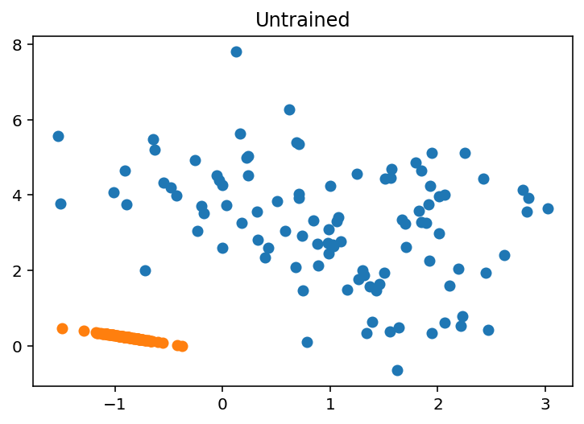
Define the Loss function
\(\ell_2\) penalty
diff = X - X_hatdiff.shape(100, 2)diff[:5]DeviceArray([[-0.46981597, 5.271835 ],
[ 1.6502905 , 3.6781619 ],
[ 1.8507848 , 5.0589485 ],
[ 2.8690844 , 4.5646677 ],
[ 0.4905889 , 2.8893166 ]], dtype=float32)(diff**2).sum(axis=1).mean() / 2DeviceArray(7.9555416, dtype=float32)(diff**2).sum(axis=1)[:5]DeviceArray([28.01297 , 16.252333, 29.018364, 29.067837, 8.588828], dtype=float32)(jnp.linalg.norm(diff, ord=2, axis=1) ** 2).mean() / 2DeviceArray(7.955541, dtype=float32)from sklearn.metrics import mean_squared_errormean_squared_error(X, X_hat)7.9555407print(2 * optax.l2_loss(X_hat, X).mean())
"""
Multplying by two
Docstring says:
Calculates the L2 loss for a set of predictions.
Note: the 0.5 term is standard in "Pattern Recognition and Machine Learning"
by Bishop, but not "The Elements of Statistical Learning" by Tibshirani.
"""7.9555416'\n\nMultplying by two\nDocstring says:\nCalculates the L2 loss for a set of predictions.\n\nNote: the 0.5 term is standard in "Pattern Recognition and Machine Learning"\nby Bishop, but not "The Elements of Statistical Learning" by Tibshirani.\n'@jax.jit
def loss(params, X):
X_hat = ae.apply(params, X)
return 2 * optax.l2_loss(X_hat, X).mean()loss(params, X)DeviceArray(7.9555416, dtype=float32)Defining the train function
def train(
X: jnp.array,
optimizer: optax._src.base.GradientTransformation,
model: nn.Module,
key_param: jax.random.PRNGKey,
n_iter: int=500,
print_every: int=10
):
loss_array = np.zeros(n_iter)
def loss(params, X):
X_hat = model.apply(params, X)
return 2 * optax.l2_loss(X_hat, X).mean()
params = model.init(key_param, X)
opt_state = optimizer.init(params)
loss_grad_fn = jax.value_and_grad(loss)
for i in range(n_iter):
loss_val, grads = loss_grad_fn(params, X)
loss_array[i] = loss_val.item()
updates, opt_state = optimizer.update(grads, opt_state)
params = optax.apply_updates(params, updates)
if i % print_every == 0:
print("Loss step {}: ".format(i), loss_val)
return params, loss_arrayoptimized_params, loss_array = train(
X, optax.adam(learning_rate=0.1), ae, jax.random.PRNGKey(0), n_iter=30
)Loss step 0: 7.9555416
Loss step 10: 1.3104575
Loss step 20: 0.544944plt.plot(loss_array)
plt.xlabel("Iterations")
_ = plt.ylabel("Reconstruction loss")
plot_2d_reconstruction(X, optimized_params, ae, True)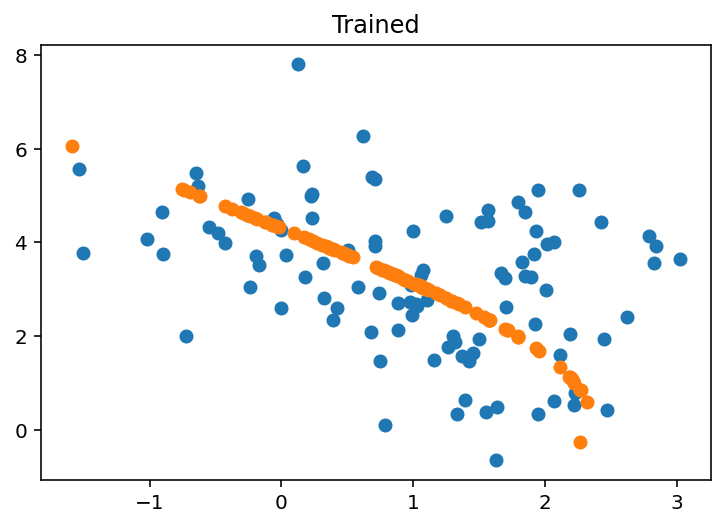
from sklearn import datasetsdigits = datasets.load_digits()X = jnp.array(digits["data"])
y = digits["target"]X.shape(1797, 64)plt.imshow(X[1].reshape(8, 8), cmap="Greys")
y[1]1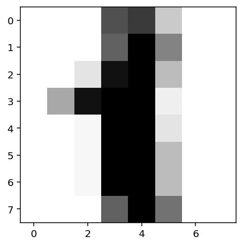
bn = 2
ae_digits = AE(bn, X.shape[1])
ae_digitsAE(
# attributes
bottleneck = 2
out = 64
)print(ae_digits.tabulate(random.PRNGKey(0), X))
AE Summary
┏━━━━━━━━━━━━━━━━┳━━━━━━━━━┳━━━━━━━━━━━━━━━━┳━━━━━━━━━━━━━━━━━┳━━━━━━━━━━━━━━━━┓
┃ path ┃ module ┃ inputs ┃ outputs ┃ params ┃
┡━━━━━━━━━━━━━━━━╇━━━━━━━━━╇━━━━━━━━━━━━━━━━╇━━━━━━━━━━━━━━━━━╇━━━━━━━━━━━━━━━━┩
│ │ AE │ float32[1797,… │ float32[1797,6… │ │
├────────────────┼─────────┼────────────────┼─────────────────┼────────────────┤
│ encoder │ Encoder │ float32[1797,… │ float32[1797,2] │ │
├────────────────┼─────────┼────────────────┼─────────────────┼────────────────┤
│ encoder/Dense… │ Dense │ float32[1797,… │ float32[1797,5] │ bias: │
│ │ │ │ │ float32[5] │
│ │ │ │ │ kernel: │
│ │ │ │ │ float32[64,5] │
│ │ │ │ │ │
│ │ │ │ │ 325 (1.3 KB) │
├────────────────┼─────────┼────────────────┼─────────────────┼────────────────┤
│ encoder/Dense… │ Dense │ float32[1797,… │ float32[1797,2] │ bias: │
│ │ │ │ │ float32[2] │
│ │ │ │ │ kernel: │
│ │ │ │ │ float32[5,2] │
│ │ │ │ │ │
│ │ │ │ │ 12 (48 B) │
├────────────────┼─────────┼────────────────┼─────────────────┼────────────────┤
│ decoder │ Decoder │ float32[1797,… │ float32[1797,6… │ │
├────────────────┼─────────┼────────────────┼─────────────────┼────────────────┤
│ decoder/Dense… │ Dense │ float32[1797,… │ float32[1797,5] │ bias: │
│ │ │ │ │ float32[5] │
│ │ │ │ │ kernel: │
│ │ │ │ │ float32[2,5] │
│ │ │ │ │ │
│ │ │ │ │ 15 (60 B) │
├────────────────┼─────────┼────────────────┼─────────────────┼────────────────┤
│ decoder/Dense… │ Dense │ float32[1797,… │ float32[1797,6… │ bias: │
│ │ │ │ │ float32[64] │
│ │ │ │ │ kernel: │
│ │ │ │ │ float32[5,64] │
│ │ │ │ │ │
│ │ │ │ │ 384 (1.5 KB) │
├────────────────┼─────────┼────────────────┼─────────────────┼────────────────┤
│ │ │ │ Total │ 736 (2.9 KB) │
└────────────────┴─────────┴────────────────┴─────────────────┴────────────────┘
Total Parameters: 736 (2.9 KB)
params_digits = ae_digits.init(random.PRNGKey(0), X)jax.tree_util.tree_map(lambda x: x.shape, params_digits)FrozenDict({
params: {
decoder: {
Dense_0: {
bias: (5,),
kernel: (2, 5),
},
Dense_1: {
bias: (64,),
kernel: (5, 64),
},
},
encoder: {
Dense_0: {
bias: (5,),
kernel: (64, 5),
},
Dense_1: {
bias: (2,),
kernel: (5, 2),
},
},
},
})def plot_encoding_2dim(encoder, params):
assert encoder.bottleneck >= 2
X_low = encoder.apply({"params": params["params"]["encoder"]}, X)
df = pd.DataFrame(X_low)
df["label"] = y
sns.pairplot(df, hue="label", palette="bright")Untrained encodings
plot_encoding_2dim(Encoder(bottleneck=bn), params_digits)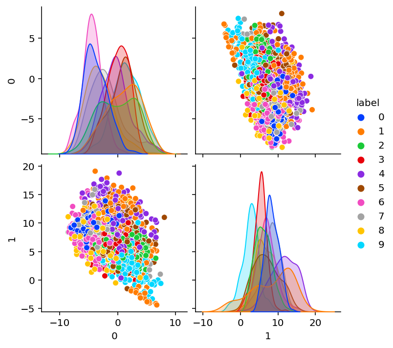
X_recon = ae_digits.apply(params_digits, X)def plot_orig_recon(index=0):
fig, ax = plt.subplots(sharex=True, ncols=2)
ax[0].imshow(X[index].reshape(8, 8), cmap="Greys")
ax[1].imshow(X_recon[index].reshape(8, 8), cmap="Greys")
ax[0].set_title("Original")
ax[1].set_title("Reconstructed")plot_orig_recon(5)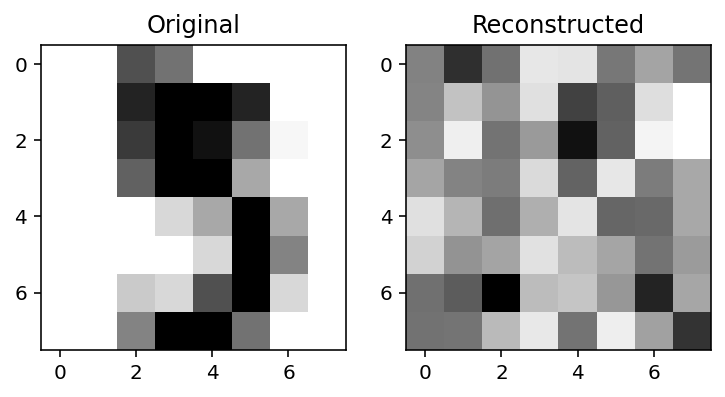
optimized_params_digits, loss_array_digits = train(
X, optax.adam(learning_rate=0.01), ae_digits, jax.random.PRNGKey(0), n_iter=1000
)Loss step 0: 90.91908
Loss step 10: 62.609577
Loss step 20: 58.390884
Loss step 30: 53.54514
Loss step 40: 45.062607
Loss step 50: 33.541103
Loss step 60: 25.167671
Loss step 70: 21.107908
Loss step 80: 19.424128
Loss step 90: 18.734087
Loss step 100: 18.47802
Loss step 110: 18.390646
Loss step 120: 18.352455
Loss step 130: 18.333141
Loss step 140: 18.321236
Loss step 150: 18.311743
Loss step 160: 18.3032
Loss step 170: 18.295115
Loss step 180: 18.287226
Loss step 190: 18.279234
Loss step 200: 18.270723
Loss step 210: 18.26098
Loss step 220: 18.2499
Loss step 230: 18.237106
Loss step 240: 18.221647
Loss step 250: 18.20243
Loss step 260: 18.177717
Loss step 270: 18.14539
Loss step 280: 18.105865
Loss step 290: 18.058249
Loss step 300: 18.000141
Loss step 310: 17.931208
Loss step 320: 17.84967
Loss step 330: 17.755304
Loss step 340: 17.65073
Loss step 350: 17.537819
Loss step 360: 17.418528
Loss step 370: 17.293976
Loss step 380: 17.164043
Loss step 390: 17.029558
Loss step 400: 16.89464
Loss step 410: 16.760334
Loss step 420: 16.626553
Loss step 430: 16.493797
Loss step 440: 16.362513
Loss step 450: 16.234201
Loss step 460: 16.11052
Loss step 470: 15.992949
Loss step 480: 15.883502
Loss step 490: 15.783846
Loss step 500: 15.694724
Loss step 510: 15.615571
Loss step 520: 15.54589
Loss step 530: 15.483993
Loss step 540: 15.427973
Loss step 550: 15.376085
Loss step 560: 15.326871
Loss step 570: 15.280196
Loss step 580: 15.23521
Loss step 590: 15.191253
Loss step 600: 15.149132
Loss step 610: 15.109302
Loss step 620: 15.071858
Loss step 630: 15.037474
Loss step 640: 15.005837
Loss step 650: 14.977009
Loss step 660: 14.950782
Loss step 670: 14.927103
Loss step 680: 14.905551
Loss step 690: 14.885867
Loss step 700: 14.867877
Loss step 710: 14.851396
Loss step 720: 14.836317
Loss step 730: 14.8224125
Loss step 740: 14.809575
Loss step 750: 14.797547
Loss step 760: 14.786259
Loss step 770: 14.775562
Loss step 780: 14.76545
Loss step 790: 14.755904
Loss step 800: 14.746771
Loss step 810: 14.738021
Loss step 820: 14.729595
Loss step 830: 14.721415
Loss step 840: 14.713423
Loss step 850: 14.705618
Loss step 860: 14.697898
Loss step 870: 14.690201
Loss step 880: 14.682494
Loss step 890: 14.674812
Loss step 900: 14.667133
Loss step 910: 14.6593275
Loss step 920: 14.651322
Loss step 930: 14.643042
Loss step 940: 14.634569
Loss step 950: 14.625735
Loss step 960: 14.616413
Loss step 970: 14.6066065
Loss step 980: 14.596094
Loss step 990: 14.58464plt.plot(loss_array_digits)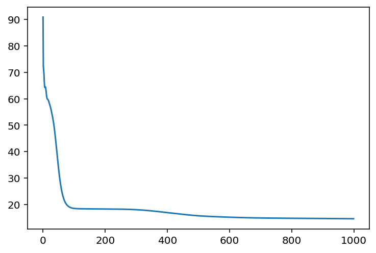
Trained encodings
plot_encoding_2dim(Encoder(bottleneck=bn), optimized_params_digits)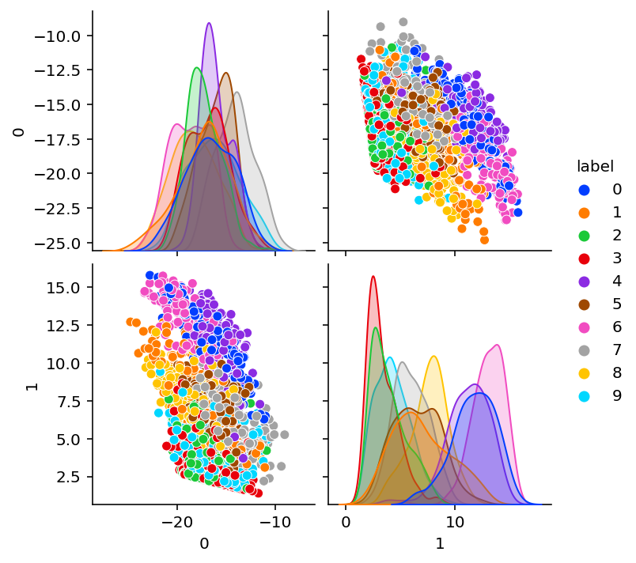
Reconstruction
X_recon = ae_digits.apply(optimized_params_digits, X)
plot_orig_recon(4)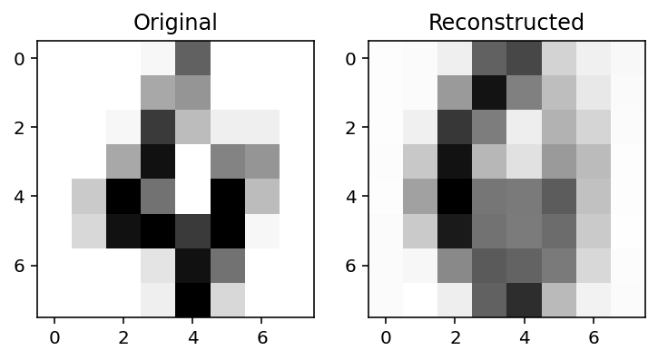
X_reconstructed = ae.apply(params, X)errs = jnp.square(X - X_reconstructed).sum(axis=1)
err_df = pd.DataFrame({"error": errs, "label": y})
err_df.groupby("label").mean()| error | |
|---|---|
| label | |
| 0 | 1067.159668 |
| 1 | 1253.397217 |
| 2 | 1187.446655 |
| 3 | 730.839417 |
| 4 | 919.732239 |
| 5 | 1103.442505 |
| 6 | 913.172607 |
| 7 | 1309.424438 |
| 8 | 892.981750 |
| 9 | 891.891907 |
err_df = pd.DataFrame({"error": errs, "label": y})err_df.groupby("label").mean()| error | |
|---|---|
| label | |
| 0 | 1067.159668 |
| 1 | 1253.397217 |
| 2 | 1187.446655 |
| 3 | 730.839417 |
| 4 | 919.732239 |
| 5 | 1103.442505 |
| 6 | 913.172607 |
| 7 | 1309.424438 |
| 8 | 892.981750 |
| 9 | 891.891907 |
Convoluational AE
class ConvEncoder(nn.Module):
bottleneck: int
@nn.compact
def __call__(self, x):
n = x.shape[0] # x is nx64
x = x.reshape(n, 8, 8, 1)
x = nn.Conv(features=4, kernel_size=(2, 2), strides=1, padding=0)(
x
) # 8X8X1 -> 6x6X4
x = nn.selu(x)
x = nn.max_pool(x, window_shape=(2, 2), strides=(2, 2)) # 6x6x4 --> 3x3x4
x = nn.selu(x)
x = x.reshape(n, -1) # N X 3x3x4 -> N X 36
x = nn.Dense(self.bottleneck)(x)
return xce = ConvEncoder(2)
#print(ce.tabulate(random.PRNGKey(0), X))
print(ce.tabulate(random.PRNGKey(0), X, console_kwargs={"width": 120}))
ConvEncoder Summary
┏━━━━━━━━━┳━━━━━━━━━━━━━┳━━━━━━━━━━━━━━━━━━━━━┳━━━━━━━━━━━━━━━━━━━━━┳━━━━━━━━━━━━━━━━━━━━━━━━━━┓
┃ path ┃ module ┃ inputs ┃ outputs ┃ params ┃
┡━━━━━━━━━╇━━━━━━━━━━━━━╇━━━━━━━━━━━━━━━━━━━━━╇━━━━━━━━━━━━━━━━━━━━━╇━━━━━━━━━━━━━━━━━━━━━━━━━━┩
│ │ ConvEncoder │ float32[1797,64] │ float32[1797,2] │ │
├─────────┼─────────────┼─────────────────────┼─────────────────────┼──────────────────────────┤
│ Conv_0 │ Conv │ float32[1797,8,8,1] │ float32[1797,7,7,4] │ bias: float32[4] │
│ │ │ │ │ kernel: float32[2,2,1,4] │
│ │ │ │ │ │
│ │ │ │ │ 20 (80 B) │
├─────────┼─────────────┼─────────────────────┼─────────────────────┼──────────────────────────┤
│ Dense_0 │ Dense │ float32[1797,36] │ float32[1797,2] │ bias: float32[2] │
│ │ │ │ │ kernel: float32[36,2] │
│ │ │ │ │ │
│ │ │ │ │ 74 (296 B) │
├─────────┼─────────────┼─────────────────────┼─────────────────────┼──────────────────────────┤
│ │ │ │ Total │ 94 (376 B) │
└─────────┴─────────────┴─────────────────────┴─────────────────────┴──────────────────────────┘
Total Parameters: 94 (376 B)
class ConvDecoder(nn.Module):
@nn.compact
def __call__(self, x):
x = nn.Dense(36)(x) # Nx2 --> Nx36
x = nn.selu(x)
x = x.reshape(-1, 3, 3, 4) # NX3X3X4
x = nn.ConvTranspose(features=4, kernel_size=(2, 2), strides=(2, 2))(
x
) # 3x3x4 -> 6x6X4
x = nn.selu(x)
x = nn.Conv(features=1, kernel_size=(1, 1), strides=1, padding=1)(
x
) # 6x6x4 -> 8x8x1
x = x.reshape(-1, 64)
return xcd = ConvDecoder()
print(
cd.tabulate(
random.PRNGKey(0),
jax.random.normal(key=jax.random.PRNGKey(0), shape=(1797, 2)),
console_kwargs={"width": 120},
)
)
ConvDecoder Summary
┏━━━━━━━━━━━━━━━━━┳━━━━━━━━━━━━━━━┳━━━━━━━━━━━━━━━━━━━━━┳━━━━━━━━━━━━━━━━━━━━━┳━━━━━━━━━━━━━━━━━━━━━━━━━━┓
┃ path ┃ module ┃ inputs ┃ outputs ┃ params ┃
┡━━━━━━━━━━━━━━━━━╇━━━━━━━━━━━━━━━╇━━━━━━━━━━━━━━━━━━━━━╇━━━━━━━━━━━━━━━━━━━━━╇━━━━━━━━━━━━━━━━━━━━━━━━━━┩
│ │ ConvDecoder │ float32[1797,2] │ float32[1797,64] │ │
├─────────────────┼───────────────┼─────────────────────┼─────────────────────┼──────────────────────────┤
│ Dense_0 │ Dense │ float32[1797,2] │ float32[1797,36] │ bias: float32[36] │
│ │ │ │ │ kernel: float32[2,36] │
│ │ │ │ │ │
│ │ │ │ │ 108 (432 B) │
├─────────────────┼───────────────┼─────────────────────┼─────────────────────┼──────────────────────────┤
│ ConvTranspose_0 │ ConvTranspose │ float32[1797,3,3,4] │ float32[1797,6,6,4] │ bias: float32[4] │
│ │ │ │ │ kernel: float32[2,2,4,4] │
│ │ │ │ │ │
│ │ │ │ │ 68 (272 B) │
├─────────────────┼───────────────┼─────────────────────┼─────────────────────┼──────────────────────────┤
│ Conv_0 │ Conv │ float32[1797,6,6,4] │ float32[1797,8,8,1] │ bias: float32[1] │
│ │ │ │ │ kernel: float32[1,1,4,1] │
│ │ │ │ │ │
│ │ │ │ │ 5 (20 B) │
├─────────────────┼───────────────┼─────────────────────┼─────────────────────┼──────────────────────────┤
│ │ │ │ Total │ 181 (724 B) │
└─────────────────┴───────────────┴─────────────────────┴─────────────────────┴──────────────────────────┘
Total Parameters: 181 (724 B)
class ConvAE(nn.Module):
bottleneck: int
def setup(self):
# Alternative to @nn.compact -> explicitly define modules
# Better for later when we want to access the encoder and decoder explicitly
self.encoder = ConvEncoder(bottleneck=self.bottleneck)
self.decoder = ConvDecoder()
def __call__(self, x):
z = self.encoder(x)
x_hat = self.decoder(z)
return x_hatcae = ConvAE(2)
print(
cae.tabulate(
random.PRNGKey(0),
X,
console_kwargs={"width": 120},
)
)
ConvAE Summary
┏━━━━━━━━━━━━━━━━━━━━━━━━━┳━━━━━━━━━━━━━━━┳━━━━━━━━━━━━━━━━━━━━━┳━━━━━━━━━━━━━━━━━━━━━┳━━━━━━━━━━━━━━━━━━━━━━━━━━┓
┃ path ┃ module ┃ inputs ┃ outputs ┃ params ┃
┡━━━━━━━━━━━━━━━━━━━━━━━━━╇━━━━━━━━━━━━━━━╇━━━━━━━━━━━━━━━━━━━━━╇━━━━━━━━━━━━━━━━━━━━━╇━━━━━━━━━━━━━━━━━━━━━━━━━━┩
│ │ ConvAE │ float32[1797,64] │ float32[1797,64] │ │
├─────────────────────────┼───────────────┼─────────────────────┼─────────────────────┼──────────────────────────┤
│ encoder │ ConvEncoder │ float32[1797,64] │ float32[1797,2] │ │
├─────────────────────────┼───────────────┼─────────────────────┼─────────────────────┼──────────────────────────┤
│ encoder/Conv_0 │ Conv │ float32[1797,8,8,1] │ float32[1797,7,7,4] │ bias: float32[4] │
│ │ │ │ │ kernel: float32[2,2,1,4] │
│ │ │ │ │ │
│ │ │ │ │ 20 (80 B) │
├─────────────────────────┼───────────────┼─────────────────────┼─────────────────────┼──────────────────────────┤
│ encoder/Dense_0 │ Dense │ float32[1797,36] │ float32[1797,2] │ bias: float32[2] │
│ │ │ │ │ kernel: float32[36,2] │
│ │ │ │ │ │
│ │ │ │ │ 74 (296 B) │
├─────────────────────────┼───────────────┼─────────────────────┼─────────────────────┼──────────────────────────┤
│ decoder │ ConvDecoder │ float32[1797,2] │ float32[1797,64] │ │
├─────────────────────────┼───────────────┼─────────────────────┼─────────────────────┼──────────────────────────┤
│ decoder/Dense_0 │ Dense │ float32[1797,2] │ float32[1797,36] │ bias: float32[36] │
│ │ │ │ │ kernel: float32[2,36] │
│ │ │ │ │ │
│ │ │ │ │ 108 (432 B) │
├─────────────────────────┼───────────────┼─────────────────────┼─────────────────────┼──────────────────────────┤
│ decoder/ConvTranspose_0 │ ConvTranspose │ float32[1797,3,3,4] │ float32[1797,6,6,4] │ bias: float32[4] │
│ │ │ │ │ kernel: float32[2,2,4,4] │
│ │ │ │ │ │
│ │ │ │ │ 68 (272 B) │
├─────────────────────────┼───────────────┼─────────────────────┼─────────────────────┼──────────────────────────┤
│ decoder/Conv_0 │ Conv │ float32[1797,6,6,4] │ float32[1797,8,8,1] │ bias: float32[1] │
│ │ │ │ │ kernel: float32[1,1,4,1] │
│ │ │ │ │ │
│ │ │ │ │ 5 (20 B) │
├─────────────────────────┼───────────────┼─────────────────────┼─────────────────────┼──────────────────────────┤
│ │ │ │ Total │ 275 (1.1 KB) │
└─────────────────────────┴───────────────┴─────────────────────┴─────────────────────┴──────────────────────────┘
Total Parameters: 275 (1.1 KB)
params = cae.init(random.PRNGKey(0), X)plot_encoding_2dim(ConvEncoder(bottleneck=2), params)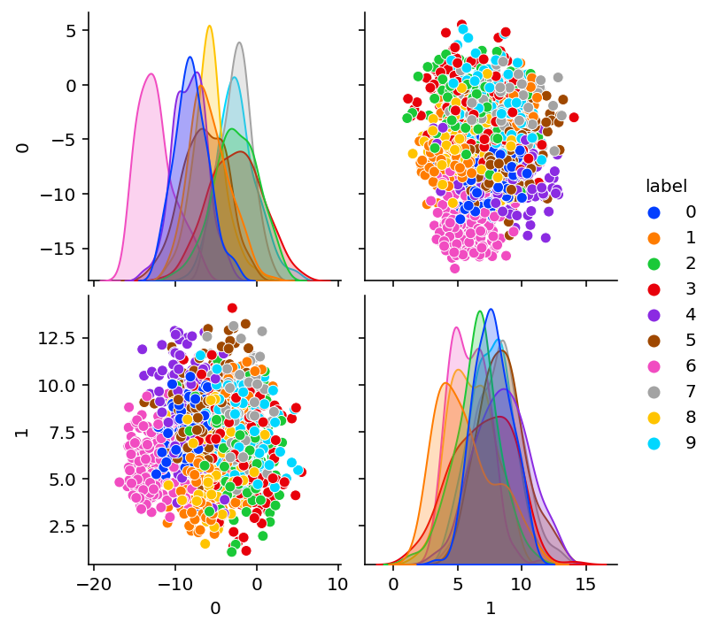
optimized_params_digits_cae, loss_array_digits_cae = train(
X, optax.adam(learning_rate=0.01), cae, jax.random.PRNGKey(0), n_iter=1000, print_every=50
)Loss step 0: 61.916904
Loss step 50: 30.379993
Loss step 100: 27.855324
Loss step 150: 26.851124
Loss step 200: 25.77603
Loss step 250: 25.184359
Loss step 300: 24.772747
Loss step 350: 24.351847
Loss step 400: 24.091908
Loss step 450: 23.887573
Loss step 500: 23.72832
Loss step 550: 23.607725
Loss step 600: 23.514961
Loss step 650: 23.419945
Loss step 700: 23.363184
Loss step 750: 23.30127
Loss step 800: 23.258532
Loss step 850: 23.206999
Loss step 900: 23.162285
Loss step 950: 23.13027plot_encoding_2dim(ConvEncoder(bottleneck=2), optimized_params_digits_cae)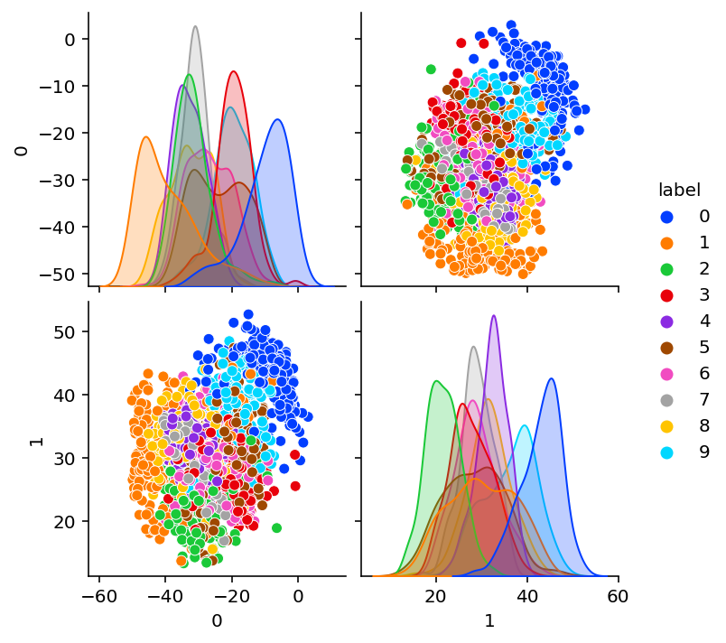
BayesOpt for optimizing the latent dimension
def black_box_function(x, y):
"""Function with unknown internals we wish to maximize.
This is just serving as an example, for all intents and
purposes think of the internals of this function, i.e.: the process
which generates its output values, as unknown.
"""
x = int(x)
y = int(y)
return function_discrete(x, y)def function_discrete(x, y):
assert type(x) ==int
return -(x**2) - (y - 1) ** 2 + 1pbounds = {"x": (2, 4), "y": (-3, 3)}optimizer = BayesianOptimization(
f=black_box_function,
pbounds=pbounds,
verbose=2, # verbose = 1 prints only when a maximum is observed, verbose = 0 is silent
random_state=1,
)optimizer.maximize()| iter | target | x | y |
-------------------------------------------------
| 1 | -3.0 | 2.834 | 1.322 |
| 2 | -7.0 | 2.0 | -1.186 |
| 3 | -12.0 | 2.294 | -2.446 |
| 4 | -4.0 | 2.373 | -0.9266 |
| 5 | -4.0 | 2.794 | 0.2329 |
| 6 | -15.0 | 4.0 | 1.331 |
| 7 | -4.0 | 2.348 | 0.8879 |
| 8 | -3.0 | 2.797 | 1.257 |
| 9 | -4.0 | 2.064 | 2.229 |
| 10 | -9.0 | 3.657 | -0.9428 |
| 11 | -7.0 | 2.901 | 3.0 |
| 12 | -4.0 | 2.0 | -0.1486 |
| 13 | -31.0 | 4.0 | -3.0 |
| 14 | -7.0 | 2.0 | 3.0 |
| 15 | -3.0 | 2.0 | 1.539 |
| 16 | -3.0 | 2.512 | 1.792 |
| 17 | -19.0 | 4.0 | 3.0 |
| 18 | -4.0 | 2.831 | -0.4655 |
| 19 | -4.0 | 2.402 | -0.3286 |
| 20 | -9.0 | 3.539 | 0.08748 |
| 21 | -7.0 | 2.841 | -1.217 |
| 22 | -4.0 | 2.764 | 2.245 |
| 23 | -4.0 | 2.0 | 0.4436 |
| 24 | -3.0 | 2.469 | 1.423 |
| 25 | -3.0 | 2.0 | 1.16 |
| 26 | -3.0 | 2.787 | 1.714 |
| 27 | -4.0 | 2.932 | 0.7853 |
| 28 | -3.0 | 2.647 | 1.526 |
| 29 | -3.0 | 2.148 | 1.373 |
| 30 | -3.0 | 2.212 | 1.795 |
=================================================optimizer.max{'target': -3.0, 'params': {'x': 2.8340440094051482, 'y': 1.3219469606529488}}{k: int(v) for k, v in optimizer.max["params"].items()}{'x': 2, 'y': 1}function_discrete(2, 1)-3Let us keep a separate validation set
def loss_model(params, X, model):
X_hat = model.apply(params, X)
diff = X - X_hat
return (diff**2).sum(axis=1).mean() / X.shape[1]from functools import partial
e = partial(loss_model, model=cae)
e(params, X)DeviceArray(61.916904, dtype=float32)def validation_loss_discrete(bn):
assert type(bn) == int
# Train the model on bn sized bottleneck
cae = ConvAE(bn)
loss_fn_concrete = jax.jit(partial(loss_model, model=cae))
loss_grad_fn = jax.value_and_grad(loss_fn_concrete)
tx = optax.adam(learning_rate=1e-2)
params = cae.init(random.PRNGKey(0), X_train)
opt_state = tx.init(params)
print(f"--------Bottleneck of Size: {bn}-------------")
for i in range(30):
loss_val, grads = loss_grad_fn(params, X_train)
updates, opt_state = tx.update(grads, opt_state)
params = optax.apply_updates(params, updates)
if i % 5 == 0:
print("Loss step {}: ".format(i), loss_val)
print(f"--------End-------------")
# Evaluate on validation dataset
return loss_fn_concrete(params, X_validation)X_train, X_validation = X[:1000], X[1000:]validation_loss_discrete(2)--------Bottleneck of Size: 2-------------
Loss step 0: 62.27715
Loss step 5: 58.5037
Loss step 10: 53.984245
Loss step 15: 49.513382
Loss step 20: 43.078316
Loss step 25: 38.30596
--------End-------------DeviceArray(36.75615, dtype=float32)def validation_loss_bb(bn):
bn_int = int(bn)
return -validation_loss_discrete(bn_int)validation_loss_bb(2.5)--------Bottleneck of Size: 2-------------
Loss step 0: 62.27715
Loss step 5: 58.5037
Loss step 10: 53.984245
Loss step 15: 49.513382
Loss step 20: 43.078316
Loss step 25: 38.30596
--------End-------------DeviceArray(-36.75615, dtype=float32)pbounds = {"bn": (1, 40)}
optimizer = BayesianOptimization(
f=validation_loss_bb,
pbounds=pbounds,
verbose=2, # verbose = 1 prints only when a maximum is observed, verbose = 0 is silent
random_state=1,
)optimizer.maximize(n_iter=8)| iter | target | bn |
-------------------------------------
--------Bottleneck of Size: 17-------------
Loss step 0: 62.85297
Loss step 5: 52.85449
Loss step 10: 40.903214
Loss step 15: 35.32036
Loss step 20: 35.3193
Loss step 25: 33.33418
--------End-------------
| 1 | -32.36 | 17.26 |
--------Bottleneck of Size: 29-------------
Loss step 0: 64.064514
Loss step 5: 53.85875
Loss step 10: 47.26749
Loss step 15: 43.828564
Loss step 20: 41.847286
Loss step 25: 39.23966
--------End-------------
| 2 | -37.29 | 29.09 |
--------Bottleneck of Size: 1-------------
Loss step 0: 60.969757
Loss step 5: 58.92785
Loss step 10: 53.683678
Loss step 15: 49.58035
Loss step 20: 45.86102
Loss step 25: 44.17104
--------End-------------
| 3 | -42.48 | 1.004 |
--------Bottleneck of Size: 12-------------
Loss step 0: 63.704227
Loss step 5: 57.338806
Loss step 10: 49.537926
Loss step 15: 41.210827
Loss step 20: 38.469257
Loss step 25: 35.276833
--------End-------------
| 4 | -34.07 | 12.79 |
--------Bottleneck of Size: 6-------------
Loss step 0: 61.450924
Loss step 5: 55.82548
Loss step 10: 47.88899
Loss step 15: 40.131763
Loss step 20: 37.62544
Loss step 25: 35.873016
--------End-------------
| 5 | -34.2 | 6.723 |
--------Bottleneck of Size: 20-------------
Loss step 0: 61.81845
Loss step 5: 56.358246
Loss step 10: 51.92751
Loss step 15: 47.312576
Loss step 20: 42.146885
Loss step 25: 37.025486
--------End-------------
| 6 | -33.86 | 20.39 |
--------Bottleneck of Size: 40-------------
Loss step 0: 61.5667
Loss step 5: 49.598972
Loss step 10: 42.639145
Loss step 15: 39.22532
Loss step 20: 36.597954
Loss step 25: 34.528015
--------End-------------
| 7 | -32.67 | 40.0 |
--------Bottleneck of Size: 36-------------
Loss step 0: 62.303535
Loss step 5: 52.075367
Loss step 10: 44.435425
Loss step 15: 40.889286
Loss step 20: 39.280178
Loss step 25: 37.09512
--------End-------------
| 8 | -35.77 | 36.05 |
--------Bottleneck of Size: 9-------------
Loss step 0: 63.35566
Loss step 5: 52.45499
Loss step 10: 43.281902
Loss step 15: 37.028984
Loss step 20: 35.006325
Loss step 25: 33.583298
--------End-------------
| 9 | -33.01 | 9.596 |
--------Bottleneck of Size: 24-------------
Loss step 0: 62.888515
Loss step 5: 52.035835
Loss step 10: 42.154068
Loss step 15: 36.804348
Loss step 20: 34.53549
Loss step 25: 32.37921
--------End-------------
| 10 | -30.08 | 24.26 |
--------Bottleneck of Size: 25-------------
Loss step 0: 63.406757
Loss step 5: 50.291225
Loss step 10: 41.73214
Loss step 15: 38.421593
Loss step 20: 37.0491
Loss step 25: 34.847046
--------End-------------
| 11 | -33.89 | 25.81 |
--------Bottleneck of Size: 22-------------
Loss step 0: 62.303898
Loss step 5: 53.713398
Loss step 10: 47.806355
Loss step 15: 43.550034
Loss step 20: 42.033653
Loss step 25: 39.68766
--------End-------------
| 12 | -38.51 | 22.8 |
--------Bottleneck of Size: 24-------------
Loss step 0: 62.888515
Loss step 5: 52.035835
Loss step 10: 42.154068
Loss step 15: 36.804348
Loss step 20: 34.53549
Loss step 25: 32.37921
--------End-------------
| 13 | -30.08 | 24.3 |
=====================================optimizer.max{'target': -30.082199096679688, 'params': {'bn': 24.25939633195359}}VAE
class VAE_Encoder(nn.Module):
bottleneck: int
@nn.compact
def __call__(self, x):
x = nn.Dense(5)(x)
x = nn.selu(x)
mu = nn.Dense(features=self.bottleneck)(x)
log_std = nn.Dense(features=self.bottleneck)(x)
return mu, log_stddef reparameterize(mu, log_std, key=random.PRNGKey(0), samples=1):
std = jnp.exp(log_std)
eps = random.normal(key=key, shape=(samples,))
return mu + eps * stdsamples = reparameterize(2, jnp.log(1), samples=5000)
sns.kdeplot(samples)
plt.title(f"Mean:{jnp.mean(samples):0.2f}, stddev: {jnp.std(samples):0.2f}")Text(0.5, 1.0, 'Mean:2.00, stddev: 1.00')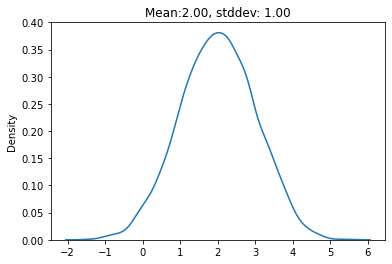
class VAE(nn.Module):
bottleneck: int
out: int
def setup(self):
# Alternative to @nn.compact -> explicitly define modules
# Better for later when we want to access the encoder and decoder explicitly
self.encoder = VAE_Encoder(bottleneck=self.bottleneck)
self.decoder = Decoder(out=self.out)
def __call__(self, x, rng=random.PRNGKey(0)):
mu, log_std = self.encoder(x)
z = reparameterize(mu, log_std, key=rng)
x_hat = self.decoder(z)
return x_hat, mu, log_stdvae = VAE(bottleneck=2, out=64)params = vae.init(random.PRNGKey(10), X)plt.imshow(vae.apply(params, X)[0][0].reshape(8, 8))<matplotlib.image.AxesImage at 0x17e9a0a30>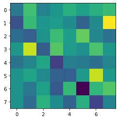
vae.apply(params, X, random.PRNGKey(10))[0][0].reshape(8, 8)DeviceArray([[ -3999.399 , 6091.6396 , -2634.2932 , 307.47302 ,
3932.0298 , 1823.3352 , 3852.157 , 5576.5605 ],
[ -8809.304 , 5299.91 , 286.5227 , 1059.3925 ,
-951.62537 , -6623.4824 , -1463.6239 , 16223.624 ],
[ -5279.1323 , -7333.815 , -71.1485 , 5679.2773 ,
1384.2794 , 8326.92 , -1747.943 , -4802.341 ],
[ 403.3739 , 13455.688 , -7414.195 , 7299.713 ,
1180.7408 , -328.49432 , 6619.1357 , 363.74713 ],
[ -4376.3506 , -2045.3063 , 2618.412 , -10890.402 ,
-3035.3848 , -3574.7527 , -5057.2593 , -1859.8529 ],
[ -53.99241 , 2318.109 , -1323.9087 , -6801.4814 ,
-7300.1553 , 865.4169 , 13349.937 , 865.3773 ],
[ 37.275284, -3962.8357 , 1771.9886 , -7992.7188 ,
4896.562 , -17371.383 , 4737.3887 , 7307.3384 ],
[ -221.0234 , -5475.8447 , 4189.172 , -1095.9471 ,
-6452.915 , 3767.8381 , -10514.758 , -2311.0862 ]], dtype=float32)vae_e = VAE_Encoder(2)
mu, log_sigma = vae_e.apply({"params": params["params"]["encoder"]}, X)tfd = tfp.distributionsqNameError: name 'q' is not definedtfd.kl_divergence(q, p).shapetfd.kl_divergence(q, p).mean()q.stddev()Loss
@jax.jit
def loss_vae(params, X, rng=random.PRNGKey(0)):
X_hat, mu, log_sigma = vae.apply(params, X, rng)
q = tfd.Normal(loc=mu, scale=jnp.exp(log_sigma))
p = tfd.Normal(loc=0.0, scale=1.0)
kl_loss = tfd.kl_divergence(q, p).mean()
diff = X - X_hat
recon_loss = (diff**2).sum(axis=1).mean() / X.shape[1]
return recon_loss + 0.0020 * kl_lossloss_vae(params, X, random.PRNGKey(4))import optax
learning_rate = 0.01
tx = optax.adam(learning_rate=learning_rate)
opt_state = tx.init(params)
loss_grad_fn = jax.value_and_grad(loss_vae)for i in range(2001):
rng, key = random.split(rng)
loss_val, grads = loss_grad_fn(params, X, rng)
updates, opt_state = tx.update(grads, opt_state)
params = optax.apply_updates(params, updates)
if i % 50 == 0:
print("Loss step {}: ".format(i), loss_val)X_recon, _, _ = vae.apply(params, X)plot_orig_recon(8)dec = Decoder(out=64)
N = 10
x_range = jnp.linspace(-2, 2, N)
fig, ax = plt.subplots(ncols=N, sharey=True, figsize=(20, 4))
for i in range(N):
ax[i].imshow(
dec.apply(
{"params": params["params"]["decoder"]}, jnp.array([x_range[i], 0.0])
).reshape(8, 8),
cmap="Greys",
)def plot_encoding_2dim_vae(encoder, params):
assert encoder.bottleneck >= 2
mu, log_sigma = encoder.apply({"params": params["params"]["encoder"]}, X)
df = pd.DataFrame(mu)
df["label"] = y
sns.pairplot(df, hue="label", palette="bright")vae_enc = VAE_Encoder(2)
mu, log_sigma = vae_enc.apply({"params": params["params"]["encoder"]}, X)
# plot_encoding_2dim_vae(VAE_Encoder(2), params)plot_encoding_2dim_vae(vae_enc, params)TODO
- regular AE: Bayesopt for latent dimension
- generation from regular AE
- graph of reconstruction loss v/s latent dimension for regular AE
- GIF for walking in latent space for VAE
- Reconstruction as a factor of Recon + Beta X KL
- Get the Encoder from AE object directly
- Impact of MC samples
- Reconstruction v/s Expected Log Likelihood (confirm the trend is same for both)
- Cleanup code so that can be reused rather than copy pasting
- Sparse VAE
- Add references
- Add bib entry
- Consider CNNs for more realistic datasets
- https://lilianweng.github.io/posts/2018-08-12-vae/
- https://theaisummer.com/jax-tensorflow-pytorch/
- https://dmol.pub/dl/VAE.html